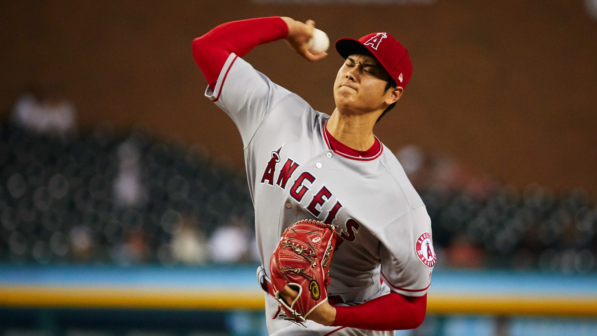

Pitching
Pitching is preceived as an "art" by some people. It is an explosive, unique and unnatrual movement|  |
Pitchers have physical capacities of throwing pitches over 100mph.
Hitting
Hitting, another "art" but even more difficult as the pitchers are throwing hard 5 ounce spheres AT you.| |